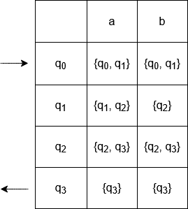
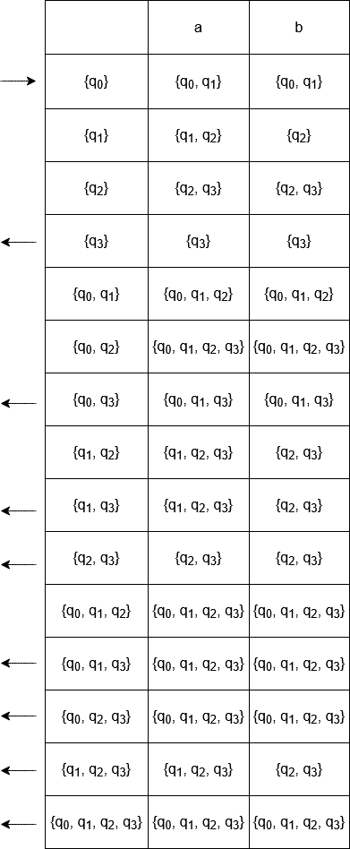
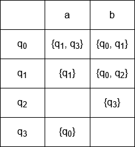
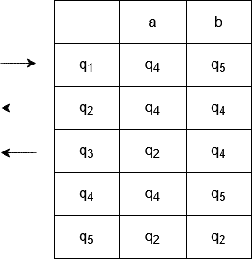
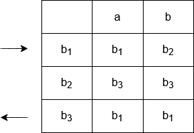
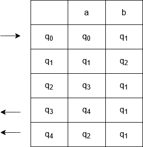

Véges automata determinizálása
Minden nemdeterminisztikus véges automatához tudunk készíteni egy olyan ekvivalens
determinisztikus véges automatát, amelyre
teljesül. Ehhez egy olyan
állapothalmaz szükséges, amely az NDVA
állapothalmazának minden részhalmazát tartalmazza. Használjuk a
függvényt úgy, hogy
. A DVA kezdőállapota legyen
és a a kimeneti állapotok halmaza
.
Legyen egynemdeterminisztikus véges automatánk, amelyben
és a
állapot-átmenetek a következők:

Először adjuk meg a DVA állapothalmazát, amit az NDVA állapotainak permutációjából kaphatunk.elemei így:
.
A kezdőállapotés
. Vagyis az újonnan képzett
-höz, amelyben az eredeti
állapotai közül legalább egy megtalálható. Esetünkben mivel egyetlen állapot, a
az elfogadó állapot,
.
Az elkészült DVA táblázattal adott.
Órai feladat 1.
Konstruáljunk az nemdeterminisztikus véges automatához egy vele ekvivalens
DVA-t úgy, hogy
teljesüljön!
és az állapot-átmenetek a következők:

Minimális állapotszámú DVA
Vegyünk egy véges determinisztikus automatát. Ha létezik olyan redukció, hogy a
-ból több lépésben eljuthatunk a
állapotig, formálisan
, akkor a
állapot elérhető a kezdőállapotból. Az automata továbbá összefüggő is, ha minden állapota elérhető a kezdőállapotból.
Ahhoz, hogy a determinisztikus véges automatához megadjunk egy minimális állapotszámú automatát, először meg kell állapítani, hogy az automata összefüggő-e vagy sem. Ha nem volt összefüggő, akkor vegyük ki azokat az állapotokat, amelyek nem elérhetők a kezdőállapotból. A következő lépés a partícionálás. A partícionálás első lépésében a fennmaradó állapotok halmazát két csoportra osztjuk: -re, a kimeneti állapotok halmazára, majd pedig
-re. A további szétbontás során egy tetszőleges partíció állapotait vizsgáljuk. Vegyük az
szimbólumot, és minden partícióbeli
állapotra vegyük a
átmenetet. Ha a kapott állapotok partíción kívülre mutatnak, újabb partíció létrehozására van szükség. Ezt az eljárást addig kell csinálni, amíg minden inputra és minden partícióra elvégezzük., és nem tudunk már új csoportokat készíteni. Végül a minimális állapotszámú automata komponensei következnek. Minden partíciót
-vel jelöljük, és felhasználjuk az eredeti kezdő- és elfogadó állapotait.
Legyendeterminisztikus véges automata, ahol
és

Elsőként meghatározzuk, összefüggő-e az automata. Jelöljük-val azokat a halmazokat, amelyeket az egyes elérhető állapotokhoz képezünk.
. Mivel más állapot nem érhető el a kezdőállapotból, ezért a
Két halmazt képezhetünk:.
Partícionálás 1. lépés. Két partícióra bontjuk az állapotokat az imént feltüntetett halmazok szerint:.
Partícionálás 2. lépés. Megvizsgáljuk, aállapotok közül milyen állapotokba juthatunk egyes inputszimbólumok olvasásakor. A
állapotokból azonos partíción belül maradunk, a
esetén másik partícióba jutunk az
szimbólum olvasásával. Így három partíció keletkezik:
.
Nem tudunk többet partícionálni, mivel a meglévő partíciókban található állapotok adott szimbólumok olvasásakor megegyező partícióra mutatnak. Így a minimális állapotszámú automata három partícióval rendelkezik.
Reprezentáljuk a-et
-gyel,
-öt
-vel,
-t
-mal. Az új automata kezdőállapota
volt. Az elfogadó állapotként a
elfogadó állapot volt eredetileg.
Végül az alábbi táblázat mutatja meg a minimális állapotszámú automata állapot-átmeneteit.

Órai feladat 2.
Legyen determinisztikus véges automata, ahol
és az állapot-átmenetek pedig

Konstruáljunk olyan minimális állapotszámú DVA-t úgy, hogy az egyenlőség teljesüljön!